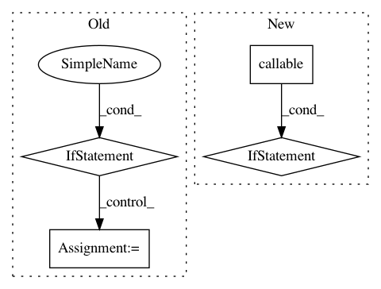

1dc67f374cde47a721e5fe5d9237bc2573bda2f0,keras/backend/cntk_backend.py,,in_test_phase,#Any#Any#,99
Before Change
def in_test_phase(x, alt):
global _LEARNING_PHASE
if learning_phase() is 1:
return alt
elif learning_phase() is 0:
return x
// else: assume learning phase is a placeholder tensor.
_LEARNING_PHASE.value = np.asarray([0])
return x
def _convert_string_dtype(dtype):
After Change
// Similiar as in_train_phase, use element_select as workaround.
if callable(x) and isinstance(x, C.cntk_py.Function) is False:
x = x()
if callable(alt) and isinstance(alt, C.cntk_py.Function) is False:
alt = alt()
return C.element_select(learning_phase(), x, alt)
def _convert_string_dtype(dtype):
In pattern: SUPERPATTERN
Frequency: 3
Non-data size: 4
Instances
Project Name: keras-team/keras
Commit Name: 1dc67f374cde47a721e5fe5d9237bc2573bda2f0
Time: 2017-07-06
Author: souptc@gmail.com
File Name: keras/backend/cntk_backend.py
Class Name:
Method Name: in_test_phase
Project Name: deepmipt/DeepPavlov
Commit Name: f528c38e26d59b231dd94b87d6603ca243fee766
Time: 2018-02-28
Author: yoptar@gmail.com
File Name: deeppavlov/core/commands/train.py
Class Name:
Method Name: train_model_from_config
Project Name: keras-team/keras
Commit Name: c3eb62763fcc5029c26b025ba1b60d7788d491a1
Time: 2019-03-30
Author: andhus@kth.se
File Name: keras/engine/saving.py
Class Name:
Method Name: save_model